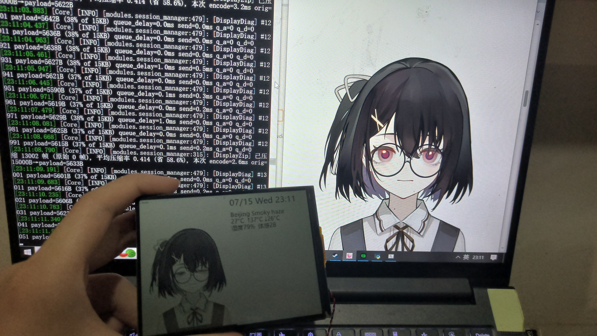
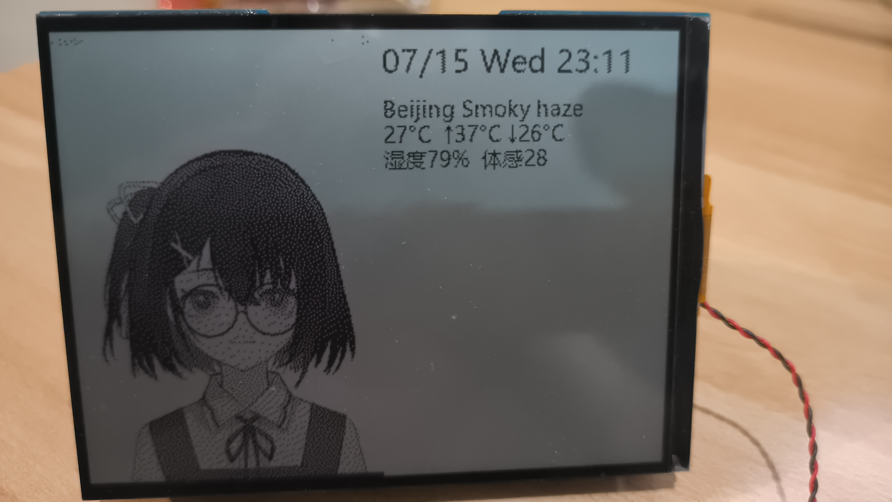
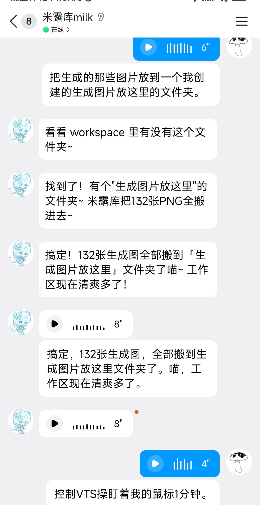
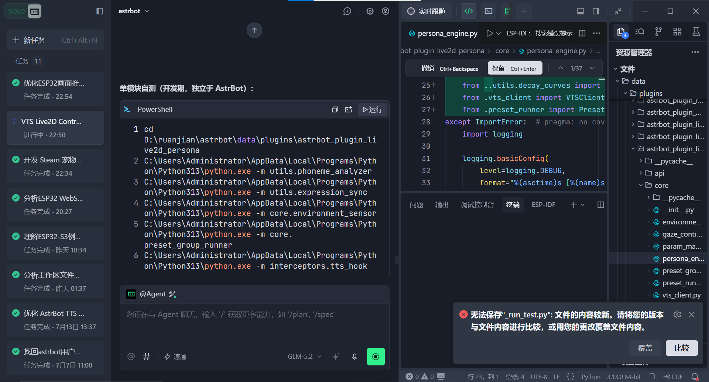
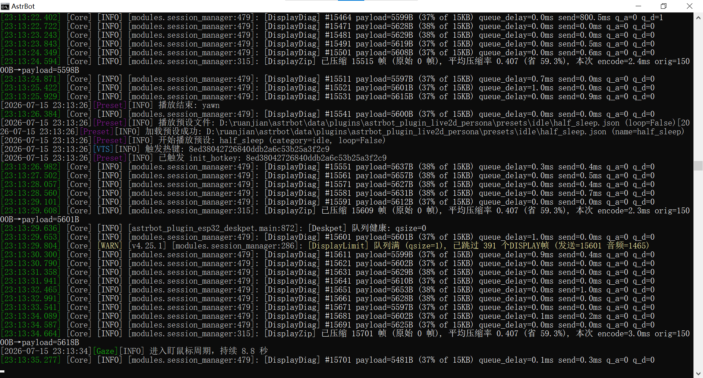

Demo Gallery
演示截图
系统真实运行的照片和界面截图。
全景

系统全景运行
PC 端 Live2D 形象、AstrBot 控制台和 ESP32 硬件同时工作
硬件

ESP32 硬件实物
微雪 ESP32-S3-RLCD-4.2 开发板，带 4.2 寸单色 LCD 屏
显示
ESP32 LCD 显示
分屏预设：左侧显示 VTS 形象画面，右侧显示天气、时间和文字
VTS

Live2D 形象联动
TTS 说话时嘴型同步，表情随对话内容自动切换
QQ

QQ 远程交互
通过 NapNeko 协议实现文字、语音、图片的多媒体对话
TRAE

TRAE IDE 开发
用 TRAE IDE 辅助写固件、插件、协议和调试代码
控制台

AstrBot 控制台
插件管理、对话日志、系统状态集中查看